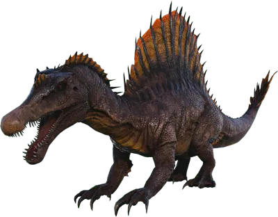

Spinosaurus
Lagarto de espina
Terópodo/Spinosauridae
Dinosaurio carnívoro ubicado en Egipto y Marruecos
El Spinosaurus fue catalogado en 1910 y vivió hace 100 millones de años. Fue un enorme dinosaurio, su cabeza era parecida a la de un cocodrilo y en el lomo tenía una gran membrana de piel en forma de vela. Se asume que la vela le servía de termorregulador: sus vasos sanguíneos enfriaban al animal en caso de extremo calor y viceversa.
Altura: 5m
longitud: 15m
Peso: 7000kg
velocidad: 30km/h
periodo: Cretácico superior
Especímenes: 6
